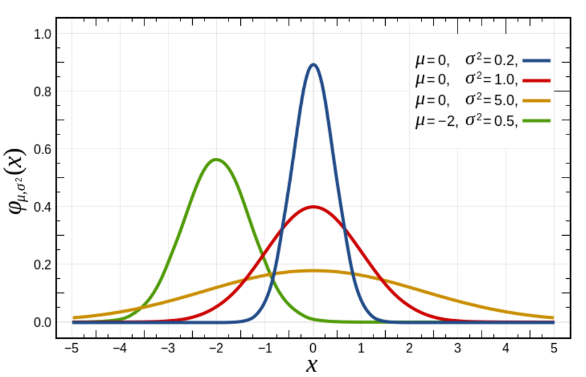

Extensions
This section covers a famous distribution that we can fit to generate likelihoods, as in the density storage method described above:

The Gaussian, or normal distribution can be used in classification and it assumes that features follow a normal distribution.
In this case, the likelihood of the features is assumed to be Gaussian:
The parameters and are taken from the training data points within class y at training time. Note that a pair of mu and sigma must be taken for every feature, for every class. This means that we store 2Dy parameters for estimation. The above function is applied to every feature, using that feature and class’ parameters, to infer the likelihood for that point. Classification can proceed as in the above.